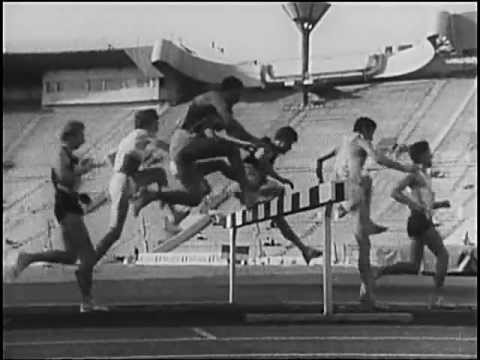

Бег. Тропой Змея. - Михаил Тихонов, Москаленко Юрий Николаевич - читать книгу в онлайн-библиотеке
 Открыть меню Книги
Открыть меню Книги
Что почитать?
Новинки % Скидки Рекомендуемое Подборки Все книги Жанры полный список Боевик Детектив Историческая проза ЛитРПГ Любовные романы Мистика Подростковая проза Попаданцы Поэзия Приключения Современная проза Триллер Ужасы Фантастика Фанфик Фэнтези Эротика Юмор Обсуждения Сообщество Конкурсы Иллюстрации ТОП Авторов Пользователей Моя библиотека Мобильная версия Войти Читать фрагмент Скачать Вконтакте Facebook Twitter ПожаловатьсяБег. Тропой Змея.
Михаил Тихонов , Москаленко Юрий Николаевич Роман / ЛитРПГ , Попаданцы в космос , Боевая фантастика весь текст 515 996 зн. , 12,90 а.л. Цикл: Бег #1 59K Награды 19 выживание , клан , космос , литрпг , нейросети , попаданец , попаданцы в космос , содружество , фантастика Аннотация Оглавление Статистика Доп. материалы Конгломерат межзвездных государств под названием Содружество переживает не самые простые времена. Он охвачен войной, которая с каждым днем приобретает все большие масштабы. Вся цивилизация, стоявшая на трех китах – нейросетях, искинах и гипердвигателях – находится под угрозой. И все это – из-за рабочего искина старой цивилизации, за который и схлестнулись противостоящие стороны.В этой войне самые сильные армии оказываются бессильны, а наращивание боевой мощи только усугубляет ситуацию. Противостояние становится все более масштабным. Но, возможно, там, где не справится целая армия, сможет достичь успеха один человек? Ведь не всегда войны выигрываются числом.
Только кто согласится взять на себя такую ответственность? Лишь тот, кому уже нечего терять и для кого путь домой заказан. И такой человек есть – землянин Виктор, которого на родной планете больше ничто не держит. Но справится ли он?
Примечания автора:
Так как книга состоит из двух, то первая доступна в бесплатном фрагменте полностью. Платите по сути за доступ ко второму тому. Спасибо))) Акт 1. Бег. Часть 1. Главы 1-4 Глава 5-6 Глава 7-8 Глава 9-11 Часть 2 Главы 1-2. Главы 3-4 Глава 5-6. Эпилог Акт 2. Тропой Змея. Главы 1-2 Глава 3-5 Глава 6-8 Глава 9-11 Глава 12-13 Часть 2. Глава 1-3 Глава 4-5 Глава 6.Эпилог Впервые опубликовано Добавили в библиотеку 1 234 Читают сейчас 796 Прочитали 148 Скачали 867Начало и конец дня на графике считаются по московскому времени (UTC +03:00)
Иллюстрации
Лейла Интернет концепт: Змей и Минматарский корвет Комментарии · 80 Рецензии · 1 Написать рецензиюСортировать по времени, по убыванию времени, по возрастанию популярности
Только зарегистрированные пользователи могут оставлять комментарии. Войдите , пожалуйста.
← назад 1 2 вперед Стасямба # Ошибки. Очень много ошибок. Если разделить все ошибки на двух авторов то может ещё и ничего, но для одной книги их слишком много.
Скальп пролога нелеп, ну к чему эта бравада про месть в самом начале? Ведь развязки в этой книге не будет, скорее всего, даже не дойдёт до точки отсчёта, ибо 10 лет за одну книгу это фейл.
Скальп учебки - вообще дурость, 2 предложения и на несколько глав расписанная учебка... Ну вот я молодец, и меня повысили. А теперь «как это было», и было то не ахти. Нелепая врезка про ситха, сальто с ударом двумя ногами в основание черепа!!! Чего? Как? Зачем? Да ни один спецназовец себе такой глупости не позволит, а уж полковник разведки тем более!
Акцент на винтовке, приказавшей долго жить, по сути в начале истории - зачем???
Флешбеки они же «чеченский синдром», призваны показать что? Суровость и окаменелость героя? Не вышло, цветной картон и ножницы, клуб любителей аппликации, вот что вышло.
Второй бой с насекомым, нож (хоть трижды вибро), под челюсть и сдохший арах, ну да, ведь все насекомые стоит им сделать небольшую дырочку в хитине, сразу замирают и ни о каких мышечных спазмах речи быть не может. Бред господа.
Совершенно противоестественная солянка из жопок охотничьих колбасок и лихого рубаки во имя луны.
На фоне всего вышеописанного, даже аристократка майор в постели у дикаря смотрится мило и органично, прям так и хочется выдохнув прошептать, верю!
Старался как мог)))
-5 пожаловаться раскрыть ветвь 0 Григорий Цуканов # Начало мутное. Иностранный легион или штрафники? Я так и не понял.
"император объявил о формировании из выживших мятежников «штрафного» легиона"
То есть, император делал именно штрафной легион, но с чего всплыл иностранный?
"Вам установлена нейросеть Тактик4М"
Очень мило, но почему желания самого клиента не спросили?
"направлен в кадровый отдел для заключения контракта"
По логике - сначала контракт, а уже потом - нейросеть и базы (в соответствии с контрактом)
"Из легиона уйти возможно лишь на перерождение"
Тогда это пожизненная тюрьма и контракт вообще не имеет смысла. Но как в такую контору можно принять человека без бумаг из трибунала?
В общем - бред с самого начала.
+4 пожаловаться раскрыть ветвь 5 Михаил Тихонов автор # ↑Штрафники, лишенныеи гражданства. По существу иностранцы
-5 пожаловаться раскрыть ветвь 4 Tarantul #Михаил а возможно ли открыть скачивание?
0 пожаловаться раскрыть ветвь 1 Tarantul # ↑А все скачал)
0 пожаловаться раскрыть ветвь 0 Дмитрий Chek #Мне не то что текст,мне даже аннотации читать не надо. Мне достаточно увидеть,кто здесь в соавторах. Человек написавший Гури должен срочно поправить своё здоровье в Желтом доме, ибо текст на страницах этой серии книг явно указывает на диагноз.
0 пожаловаться раскрыть ветвь 1 Михаил Тихонов автор # ↑Эм... Все же почитайте. Я конечно тоже тот еще псих, но все же
0 пожаловаться раскрыть ветвь 0 Yahoo12. #Утопия, ага, как впрочем и всегда)
0 пожаловаться раскрыть ветвь 1 Михаил Тихонов автор # ↑Ну так, скорее антиутопия. Я бы сказал треш
-2 пожаловаться раскрыть ветвь 0 Михаил Тихонов автор #Снизил цену на всю серию
0 пожаловаться раскрыть ветвь 0 Федотов Андрей Александрович #Книга огонь! Рекомендую!
-2 пожаловаться раскрыть ветвь 0 Михаил Тихонов автор #Вопрос к тем, кто прочитал - хотели бы продолжение?
+2 пожаловаться раскрыть ветвь 2 Вадим # ↑требую!!!! продолжения))))
-2 пожаловаться раскрыть ветвь 1 Михаил Тихонов автор #Ребят, скидка заканчивается сегодня. Успейте купить и прочитать.
-2 пожаловаться раскрыть ветвь 0 vovander #Комментарий был удален автором.
0 раскрыть ветвь 8 Михаил Тихонов автор # ↑Не понимаю...о чем речь?
0 пожаловаться раскрыть ветвь 7 Анубис49 #Прочитал очень точный отзыв на эту книгу. Просто нечего добавить.
Отношение к ГГ напомнило «Приди… к нам, и владей нами, и детьми нашими, и скотом нашим». Но одно дело когда обращаются к аристократу который знает и умеет не меньше, а то и больше, в силу лучшего образования и информированости, чем те кто обращаются. Теоретически это можно представить и принять как возможное. Другое - когда Россия например позовет в президенты лучшего, среди своих, воина, доброго и умного человека из племени пираха. Представляй не представляй - мозг не верит. Сразу понимаешь что это бред. Так и в книге. ГГ из обычного военспеца с заштатной планетки недалеко ушедшей от каменного века в легата и разрушителя звездных империй, причем без явных( да хоть каких) усилий в достижении такого уровня. Автор как художник. Он рисует для читателя мир. У хорошего мир яркий, он манит и зовет. Мир не очень одареных скуп, холоден или неприятен. Но это тоже мир. Его можно оценить и он хоть как то развивает твой кругозор. А эта книга как квадрат Малевича. Можешь стоять возле него с умным видом и пытатся увидеть там смысл. Или пожав плечами уйти к стоящим мирам, не забивая себе голову какой-то кляксой.
+12 пожаловаться раскрыть ветвь 1 Михаил Тихонов автор # ↑А где вы этот отзыв читали?)))
-6 пожаловаться раскрыть ветвь 0 OneTwo #Скажите вот Вы в соавторстве с Юрием Николаевичем, вы же наверное общаетесь между собой, он как окончательно забил болт на свою аудиторию? а то мы тут и знать не знаем что к чему может Вы развеете наши опасения.
0 пожаловаться раскрыть ветвь 7 Михаил Тихонов автор # ↑Берсерк же выходит регулярно.
0 пожаловаться раскрыть ветвь 6 Лекс #Бред.
Чушь и бред.
Спервой главы бред.
Офтоп
0 пожаловаться раскрыть ветвь 3 Михаил Тихонов автор # ↑Полностью с вами согласен. Правда ведь бред. Особенно если лень читать)))
-3 пожаловаться раскрыть ветвь 2 Михаил Тихонов автор #Я тут думал-думал. Думал-думал. Начну ка я писать что нибудь в стиле своей первой книги. Просто денег надо
-9 пожаловаться раскрыть ветвь 1 Bers # ↑ХА-ХА-ХА!!! А ведь говорят- лучше всего что-то прятать на самом видном месте! И тогда не до смеха ((((
0 пожаловаться раскрыть ветвь 0 bald_eagle #Жуткая мешанина сущностей, "патриётизма", желания выпендриться и "не быть как все" (чего только кульбит на тему "Звездных войн" стоит, который автору, видимо, кажется офигенно оригинальным, хотя по-сути, это просто дешевка). С весьма, при этом, "плоскими" персонажами. Изложенная в весьма сумбурном, невычитанном тексте с массой опечаток и орфографических ошибок. "Скажем так. Если бы с меня спросили деньги за это блюдо, я бы отказался платить" (А.Хейли. "Отель") P.S. Отдельно порадовал фортель, когда два супердредноута, имеющие задание найти целый флот, все бросают и гоняются по галактике за паршивым, полуразрушенным крейсером. А догнав, продолжают его обстреливать, уже высадив свою абордажную команду. Круть крутейшая.
+13 пожаловаться раскрыть ветвь 4 Ри # ↑Согласна. Сыро. Произведение еще раз можно переписать.
0 пожаловаться раскрыть ветвь 0 Михаил Тихонов автор # ↑Но тем не менее прочитали до конца)))
-6 пожаловаться раскрыть ветвь 2 Илья Котов # Готов подписаться под словами Shadow potion, он описал все так как я воспринимал. Рванина сюжет сбивает с толку. Так же нужно чаще делить на абзацы, а то порой сплошной текст рябит в глазах (читал с монитора).
Забавно, но возможно, я единственный разглядел истинного главного героя этой книги. Сразу он не бросается в глаза, но постепенно, если читаешь вдумчиво (а из-за вышеуказанной подачи сюжета по другому просто нельзя), замечаешь, что есть отдельная арка, это арка товарища по имени "потеря сознания". Этот парень очень хитер, постоянно на виду, но как бы и не при делах. И даже если в какой то главе он не попал в "кадр", то ты точно знаешь кто-то с ним встретился "за кадром".
А если серьезно, автор через чур злоупотребляет этим приемом или как его назвать. Даже напомнило момент в "операции Ы", где чуваки под клафилином были и один из них пытался поднять других. Поднимет одного, второй упадет, поднимает второго, первый падает. Как будто в космосе все дрищи малокровные и в каждой непонятной ситуации теряют сознание.
Ну и не могу не отметить, такое же злоупотребление флешбеками. Они хорошо работают по началу, когда надо как то раскрыть героя, но когда они продолжаются во второй половине книги и мало того переходят во вторую книгу, это борщ.
Скачал, прочитал. Автор молодец, пиши исчо, но, если честно, осилил с трудом. Не всегда могу читать за один присест, и поэтому непоследовательность повествования иногда вводит в ступор, так же как и повествование от лица разных персонажей.
Повествование для меня выглядит так:
1. Шел Иван по лесу.
2. Вот так он и потерял руку.
3.1. Палка лежала на земле уже долгое время, но ничего вокруг не происходило.
3. Иван увидел в кустах шевеление, и на него прыгнул волк.
4. Рядом с Иваном, прижимающим к груди культю лежал труп волка, с разбитой головой.
4.1. Волк увидел Ивана входящего в лес задолго до их встречи, но он ещё не знал что его ждёт.
5. Иван схватил с земли увесистую палку и ударил волка, который трепал его за руку. Конец
Вроде логично по итогу, и сюжет хорош, но пока не дойдешь до этого "конца" пазл складывается с хрустом.
+10 пожаловаться раскрыть ветвь 2 Илья Котов # ↑+
0 пожаловаться раскрыть ветвь 0 Михаил Тихонов автор # ↑Спасибо за развернутый комментарий. Постараюсь учесть в будущем. Но не обещаю. Так как опыта маловато.
0 пожаловаться раскрыть ветвь 0 ApokRiF #Интересное произведение!! Но пролог все испортил!! это как прочитать сначала эпилог!!
0 пожаловаться раскрыть ветвь 3 Михаил Тихонов автор # ↑Это не эпилог. Середина где-то
0 пожаловаться раскрыть ветвь 2 Михаил Тихонов автор #https://author.today/work/28971/
0 пожаловаться раскрыть ветвь 0 Михаил Тихонов автор #Продолжение тут https://author.today/work/28971/edit/content
0 пожаловаться раскрыть ветвь 0 Еще 19 комментариев ← назад 1 2 вперед Написать комментарий ↑ ↓ Михаил Тихонов 145K 1 018 82 Москаленко Юрий Николаевич 1,02М 1 843 1 906 Скрыть объявление Награды · 19 «Хорошее произведение!» от sasa «Рекомендую!» от salt «Потрясающе!» от Николай «Рекомендую!» от DAF «Качественная и достойная вещь!» от kass Подарить награду Показать все награды В подборках · 2 Миры EVE и Содружества pro100rno 66 Мэйнстрим Алексей Горячев 129Разделы
Подборки произведений Новости Поиск по сайту Игры ЛюдиИнфо
О проекте Справочная информация. Помощь Правила сайта Соглашение о конфиденциальности Пользовательское соглашение Публичная оферта Вакансии 2Написать нам
Предложения и идеи Поддержка: support@author.today Создатель проекта: Сергей Шапин Подписаться на нас Мобильная версия 18+ Сайт может содержать материалы, не предназначенные для просмотра лицами, не достигшими 18 лет! Author.Today © 2020 Наверх Вниз ×Вход на сайт
илиНет аккаунта? Зарегистрироваться
